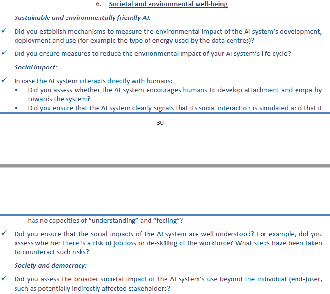

Environmental and societal well-being¶
The EU Ethical AI Guidelines notes the following on this topic:
“AI systems should benefit all human beings, including future generations. It must hence be ensured that they are sustainable and environmentally friendly. Moreover, they should take into account the environment, including other living beings, and their social and societal impact should be carefully considered.”
This guideline, although a bit philosophical, means that we should be raising awareness of the impact of AI on the evironment and societal well-being. The following table has the purpose to raise this awareness and it mentions some practical steps that AI contributors may take in this regard.
Topic |
Guideline |
Practical consequences and examples |
|---|---|---|
Sustainable and environmentally friendly |
AI contributors must design AI systems so that the resources used to implement them minimize the environment footprint, whether it is during the model development phase, model deployment phase, or during the inference phase. They should report environment-related metrics, and account for them as much as they account for pure machine learning or $-related performance metrics. |
|
Social, societal |
AI systems may alter our conception of social agency or impact our social relationships. While AI systems may enhance social skills, it might equally contribute to social deterioration, affecting people’s physical and mental wellbeing. The effects an AI system might have on this should be carefully tracked and monitored. |
|
Democracy |
The effects of an AI system on institutions, democracy and society at large should be taken into account. In particular, situations related to the democratic process, including not only political decision making but also in electoral context. |
Appendix - Recommendations from the EU¶
Below are the recommendations directly reported from EU.
{kind=link}